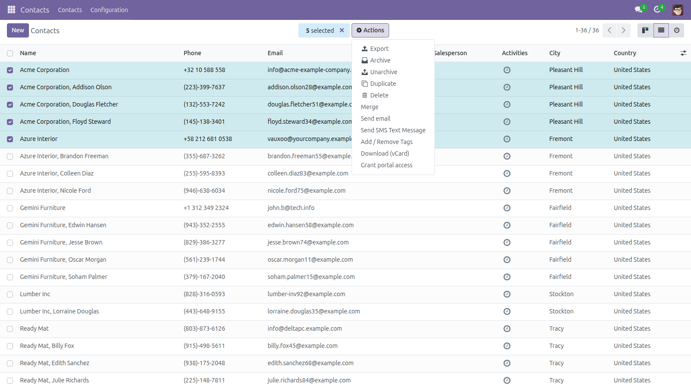
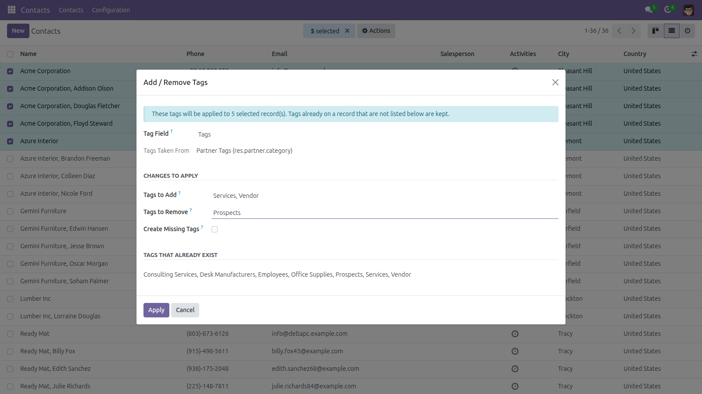
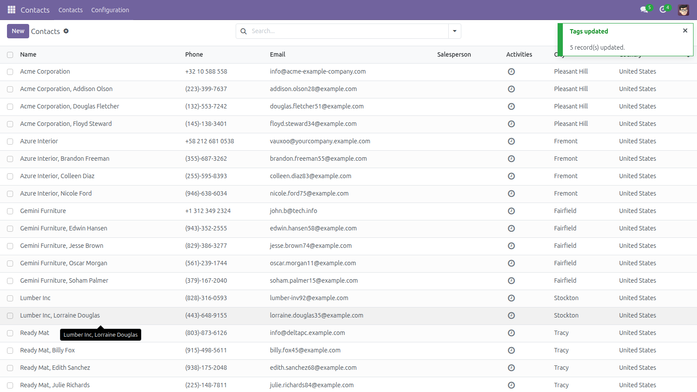
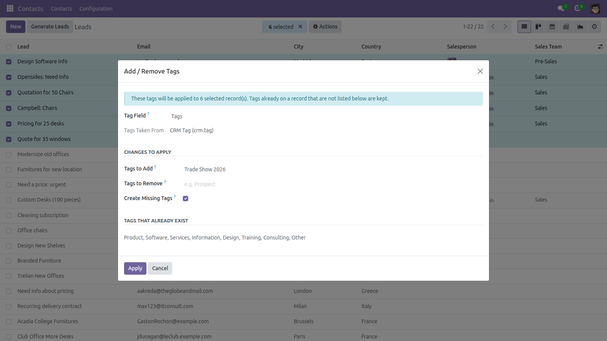

Tag many records at once, without losing the tags already there
Tagging is how teams segment contacts, leads and products — and Odoo only lets you
do it one record at a time. This module adds an Add / Remove Tags entry to
the Action menu of the list views of every model that has tags. Select the records, type the
tags to add and the tags to remove, and apply the whole thing in one step.
What it does
- Adds and removes single tags. The module never replaces the tag set of a
record, so tags a colleague added, and tags you did not mention, are kept exactly as they were.
- Works on any model that has tags. The tag fields are detected at runtime:
contacts (Tags), leads (Tags), projects and tasks, events, meetings, campaigns —
products too on Odoo 16.0 and later, where Odoo added product tags — and any
custom model with a tag field of your own.
- Lets you choose the field when a model has more than one tag field, and
preselects it when there is only one.
- Shows the tags that already exist on the chosen tag model, so you do not
have to guess how a tag is spelled.
- Creates missing tags only if you ask. The option is off by default: an
unknown tag name stops the run with a clear message instead of silently creating a typo.
- Respects access rights. Records you are not allowed to write are skipped
and counted — the module never elevates your rights to force a change through.
- Reports what really happened: how many records were updated, how many
already had the right tags, and how many were skipped.
Screenshots
1. Select the records and open the Action menu.

2. Fill in the tags to add and the tags to remove.

3. The result is reported record by record.

4. The same wizard on leads, using the CRM tag model.

Installation
- Copy the
bulk_tag_manager folder into your Odoo add-ons path.
- Open Apps, click Update Apps List.
- Search for Add and Remove Tags in Bulk and click Install.
Configuration
- There is nothing to configure: on installation the module scans the models of your
database and adds the Action-menu entry to those that have a tag field.
- If you install another app afterwards (CRM, Sales, Project, ...), open
Apps, find Add and Remove Tags in Bulk and click Upgrade.
The scan runs again and the new models get the entry too.
- Every internal user can use the wizard. What they may actually change is decided by
their normal access rights on the records and on the tags.
Usage
- Open a list view — Contacts, Leads, Products, Tasks, ...
- Tick the records you want to tag.
- Open the Actions menu and choose Add / Remove Tags.
- Pick the tag field if the model has more than one.
- Type the tags to add and the tags to remove, separated by commas. Matching is
case-insensitive; the tags that already exist are listed at the bottom of the dialog.
- Tick Create Missing Tags if a tag you want to add does not exist yet.
- Click Apply. The notification tells you how many records were updated, how many
already had the right tags, and how many were skipped.
Good to know
- Tags are entered by name, not picked from a dropdown: the tag model changes with the
model you are standing on, and Odoo cannot bind one selection widget to several models.
The dialog lists the existing tag names to make this easy.
- If two tags of the same model share the same name, the module refuses the run rather
than guessing which one you meant.
- Only tag fields are offered: a many2many named like a tag field
(
tag_ids, category_id, product_tag_ids, ...) or one
pointing at a model named like a tag model (crm.tag,
res.partner.category, ...). Other many2many fields — taxes on a
product, for example — are never listed, and are refused server-side even if the
request is forged, so this wizard can never become a blind mass editor. A custom tag
field is picked up automatically as long as it follows one of those two conventions.
- Nothing is ever deleted: removing a tag from a record does not delete the tag itself,
and no record is archived or unlinked by this module.
- Each record is written on its own, so one record refusing the change never rolls back
the ones that already went through. Very large selections are processed record by
record and can take a moment.
Supported versions
Odoo 14.0, 15.0, 16.0, 17.0, 18.0 and 19.0 —
Community and Enterprise. The module only depends on base.